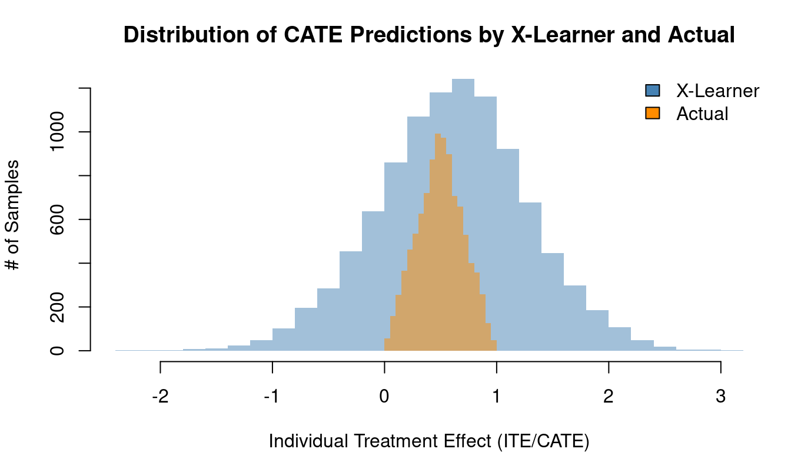
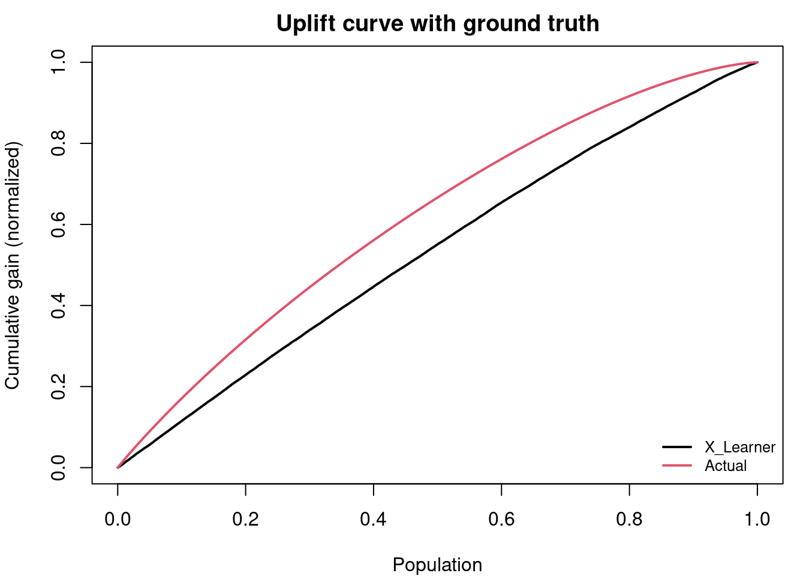
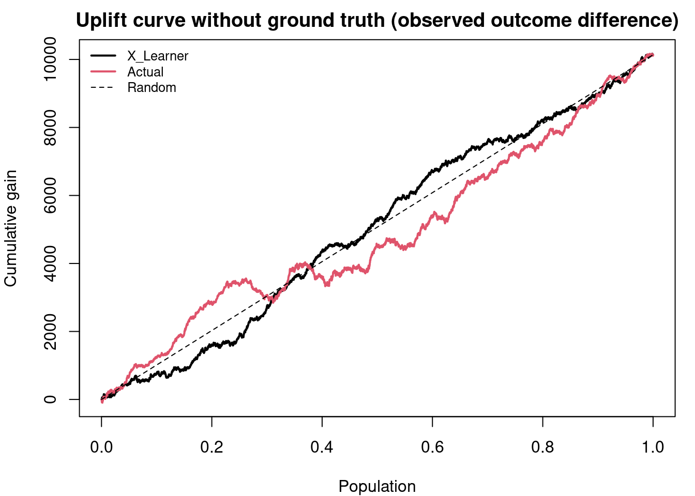
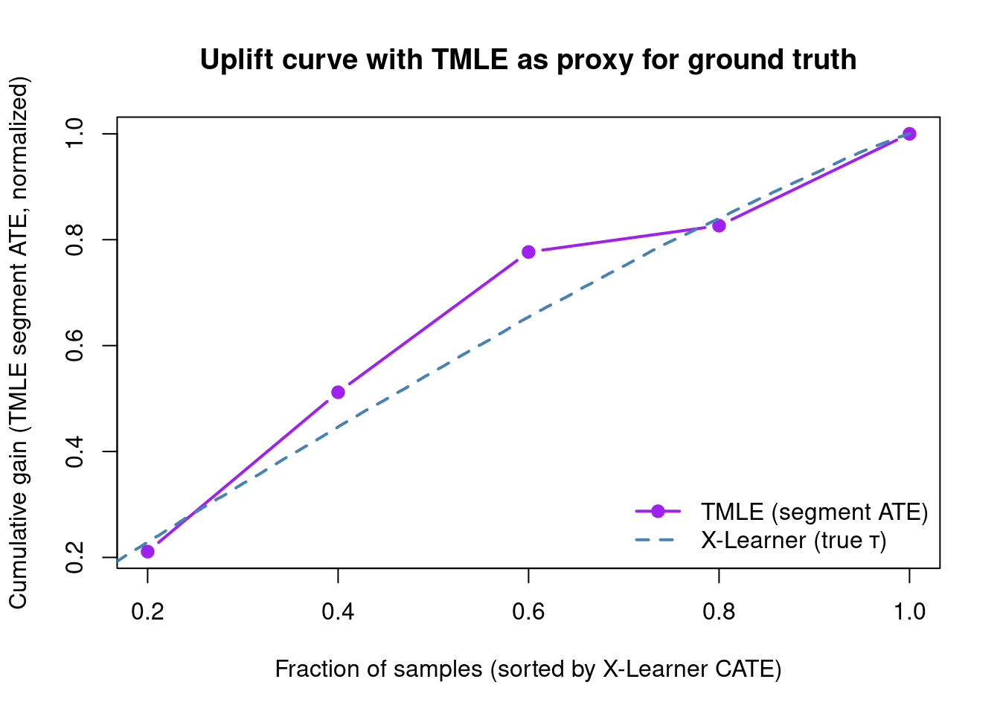
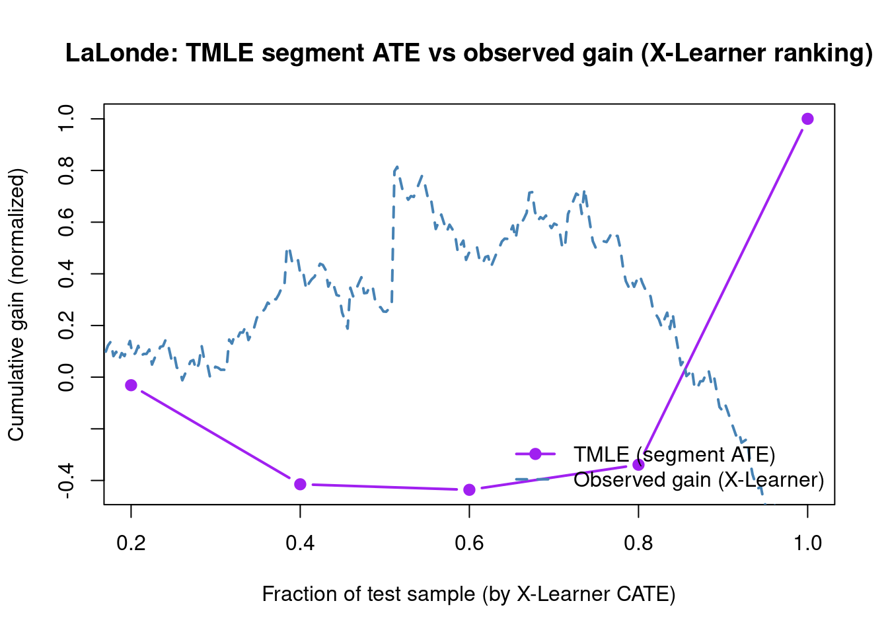
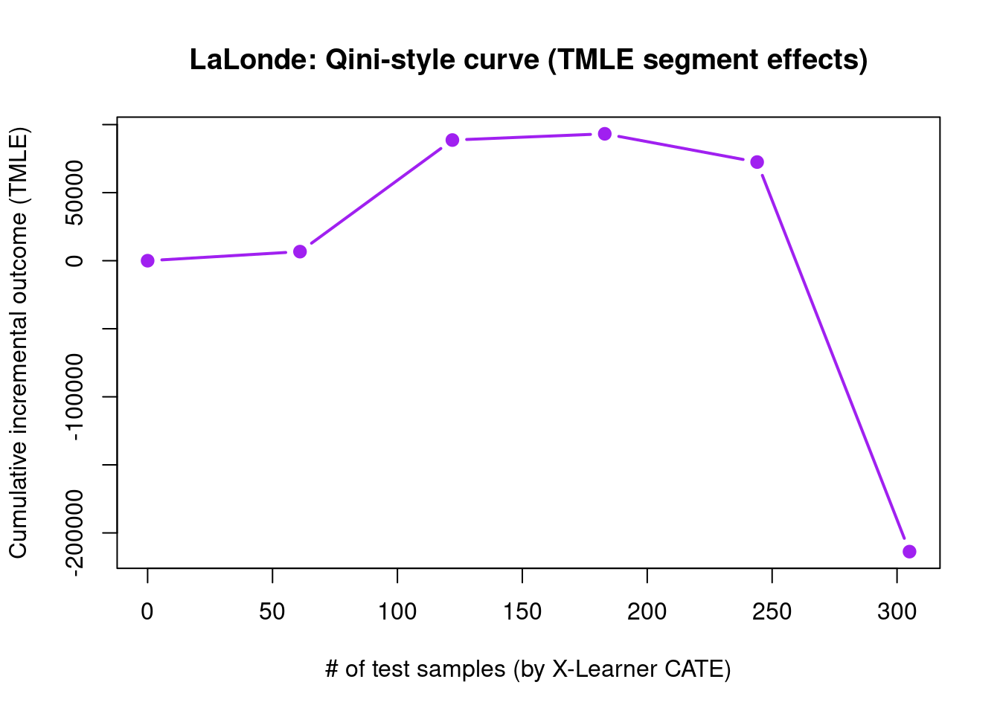

Code
packages <- c(
"RCausalML",
"glmnet",
"knitr"
)

This notebook demonstrates how to use Targeted Maximum Likelihood Estimation (TMLE) for validating some metalearners in R, following the same workflow as the Python example. We use synthetic data where the true treatment effect is known to compare uplift curves with and without TMLE, then apply the same idea to a real observational dataset (LaLonde) where the true effect is unknown.
The meta-learners covered in the preceding sections — S-, T-, X-, R-, and DR-Learners — share a common structure: they decompose the CATE estimation problem into supervised learning sub-problems and rely on base learners to approximate nuisance functions such as outcome regressions and propensity scores. A recurring limitation of this approach is that machine learning algorithms optimized for predictive accuracy introduce regularization bias — systematic shrinkage of estimates toward zero or toward the population mean — that invalidates standard confidence intervals and hypothesis tests. Targeted Maximum Likelihood Estimation (TMLE) addresses this limitation directly. Rather than replacing the meta-learner framework, TMLE acts as a bias-correction and inference layer that can be applied on top of any initial ML-based estimate to produce statistically valid, efficient causal effect estimates.
TMLE was developed primarily by Mark van der Laan and colleagues and belongs to the broader family of targeted learning methods, which combine the flexibility of nonparametric machine learning with the rigor of semiparametric efficiency theory.
To understand TMLE’s role, it helps to contrast the two approaches it synthesizes.
Traditional parametric statistics — linear regression, logistic regression — make strong structural assumptions about the data-generating process. When those assumptions hold, the resulting estimators are unbiased and admit closed-form inference. When they fail, the estimates are biased in ways that are difficult to detect or correct.
Machine learning imposes far weaker assumptions and can approximate complex, high-dimensional relationships between covariates, treatments, and outcomes. However, ML algorithms optimize a global prediction loss (e.g., mean squared error) rather than the specific causal parameter of interest. The regularization they apply — \(\ell_1\) or \(\ell_2\) penalties, early stopping, tree depth limits — reduces prediction variance at the cost of introducing bias into the causal estimate. This regularization bias is first-order: it does not vanish asymptotically at the rate needed for valid confidence interval construction.
TMLE resolves this tension. It uses ML algorithms to flexibly estimate the nuisance functions that characterize the data distribution, then applies a targeted fluctuation step that removes the first-order bias relevant to the causal parameter. The result is an estimator that combines the approximation power of ML with asymptotically valid inference.
TMLE is a two-stage substitution estimator. We describe it here for the canonical estimand, the Average Treatment Effect (ATE), before discussing its extension to the CATE.
| Symbol | Meaning |
|---|---|
| \(X\) | Covariates (pre-treatment features) |
| \(A \in \{0,1\}\) | Binary treatment indicator |
| \(Y\) | Observed outcome |
| \(Q(A, X) = \mathbb{E}[Y \mid A, X]\) | Outcome regression |
| \(g(X) = P(A = 1 \mid X)\) | Propensity score |
Using any flexible ML algorithm — random forests, gradient boosting, a SuperLearner ensemble — estimate two nuisance functions on the observed data:
At this stage, both estimates are optimized for prediction accuracy. They are good approximations to the true nuisance functions but contain regularization bias that makes them unsuitable for direct causal inference.
This is the defining innovation of TMLE. The initial outcome estimate \(\hat{Q}\) is updated to a targeted estimate \(\hat{Q}^*\) by fitting a one-dimensional fluctuation model. Specifically, a logistic regression is fit with:
\[H(A, X) = \frac{A}{\hat{g}(X)} - \frac{1 - A}{1 - \hat{g}(X)}\]
The clever covariate is the efficient influence function (EIF) of the ATE with respect to the outcome model. By including it as the sole predictor in the fluctuation regression, TMLE solves the score equation for the EIF, which is precisely the condition required for:
The fitted coefficient \(\hat{\epsilon}\) from the fluctuation regression is used to update the outcome model:
\[\hat{Q}^*(A, X) = \text{expit}\!\left(\text{logit}(\hat{Q}(A, X)) + \hat{\epsilon} \cdot H(A, X)\right)\]
The targeted outcome estimate \(\hat{Q}^*\) is plugged into the ATE formula:
\[\widehat{\text{ATE}}_{\text{TMLE}} = \frac{1}{n} \sum_{i=1}^{n} \left[ \hat{Q}^*(1, X_i) - \hat{Q}^*(0, X_i) \right]\]
Because \(\hat{Q}^*\) has been targeted, this plug-in estimate is doubly robust and semiparametrically efficient. A valid influence-function-based standard error is:
\[\widehat{\text{SE}} = \frac{1}{\sqrt{n}} \cdot \text{sd}\!\left( \hat{Q}^*(1, X_i) - \hat{Q}^*(0, X_i) + H(A_i, X_i)(Y_i - \hat{Q}^*(A_i, X_i)) \right)\]
which enables asymptotically valid confidence intervals and hypothesis tests without bootstrap resampling.
Double robustness. The TMLE estimator of the ATE is consistent if either the outcome model \(Q\) or the propensity score \(g\) is consistently estimated — but not necessarily both. This provides a meaningful safety net against misspecification of one of the two nuisance components. Importantly, when both nuisance models converge at sufficiently fast rates (each at \(n^{-1/4}\) or faster), the TMLE achieves \(\sqrt{n}\)-consistency and asymptotic normality even when both are estimated nonparametrically.
Semiparametric efficiency. Under regularity conditions, TMLE achieves the Cramér-Rao lower bound for the semiparametric model — the minimum asymptotic variance among all regular estimators. This implies that no estimator can produce narrower valid confidence intervals from the same data, asymptotically.
Valid inference without bootstrapping. The influence-function-based standard error is computed analytically from a single model fit, making TMLE inference computationally cheap compared to bootstrap-based approaches. This is particularly valuable in large datasets where bootstrapping is prohibitively expensive.
Respects parameter bounds. Because TMLE is a substitution estimator — it plugs a model prediction into a closed-form formula — the resulting estimate inherits the natural bounds of the outcome. If \(Y \in [0, 1]\), the TMLE ATE estimate lies in \([-1, 1]\) and CATE estimates lie in \([0, 1]\). Moment-condition estimators such as DML do not share this property and can produce estimates outside valid ranges in finite samples.
DML (Chernozhukov et al., 2018) is the most closely related estimator to TMLE. Both exploit Neyman orthogonality — the property that the estimating equation is insensitive to first-order errors in the nuisance estimates — and both employ cross-fitting to avoid overfitting bias from using the same data to estimate nuisance functions and the target parameter. Their differences are primarily in construction and finite-sample behavior:
| Property | TMLE | DML |
|---|---|---|
| Construction | Likelihood fluctuation (substitution) | Moment condition (score equation) |
| Parameter bounds | Guaranteed | Not guaranteed |
| Finite-sample efficiency | Generally higher | Slightly lower |
| Implementation complexity | Moderate | Lower |
| High-dimensional parameters | Extensions available | More natural |
In practice, TMLE is preferred when outcome bounds must be respected or when finite-sample efficiency is at a premium — common in medical and policy applications with moderate sample sizes. DML is often preferred for its simplicity and scalability in high-dimensional settings.
Standard TMLE as described above targets the ATE — a single population-average quantity. Extending it to the CATE, \(\tau(x) = \mathbb{E}[Y(1) - Y(0) \mid X = x]\), requires targeting a function rather than a scalar, which demands more care.
Stratified TMLE is the simplest approach: partition the covariate space into subgroups and apply standard TMLE within each stratum. This provides valid inference for subgroup-average effects but does not produce a smooth CATE function and suffers from the usual curse of dimensionality for fine partitions.
Targeted CATE learning uses a modified fluctuation step in which the clever covariate is made covariate-dependent:
\[H(A, X) = \frac{A \cdot b(X)}{\hat{g}(X)} - \frac{(1-A) \cdot b(X)}{1 - \hat{g}(X)}\]
where \(b(X)\) is a basis function or a flexible function of \(X\) chosen to target the conditional effect. The fluctuation is then fit with multiple clever covariates, one per basis element, producing a targeted update of \(\hat{Q}\) that is biased toward the CATE rather than the ATE.
TMLE inside meta-learners. A practically important use case is applying TMLE as the final estimation step within a meta-learner structure. For example, the DR-Learner’s pseudo-outcomes can be constructed using a TMLE-corrected \(\hat{Q}^*\) rather than the raw ML outcome estimate, combining the structural flexibility of the meta-learner with the debiasing guarantees of TMLE.
The primary advantage of TMLE for CATE estimation in applied uplift modeling is uncertainty quantification: while methods such as causal forests provide point estimates of \(\tau(x)\), they rely on bootstrap or subsampling variance estimators that can be unstable in small samples. TMLE-based CATE estimators provide influence-function standard errors that are valid under weaker conditions and are more computationally efficient to construct.
It is important to distinguish TMLE’s role from that of the meta-learners described in the preceding sections. Meta-learners — S, T, X, R, DR — define the structural decomposition of the CATE estimation problem: how models are organized, what they are trained to predict, and how their outputs are combined. TMLE defines an estimation and inference procedure: how bias is removed from an initial estimate and how valid uncertainty measures are constructed.
These two dimensions are largely orthogonal and can be combined freely. Any meta-learner that produces an initial CATE estimate can, in principle, be followed by a TMLE targeting step to debias the estimate and enable valid inference. In this sense, TMLE is best understood not as a competitor to the meta-learner framework but as a complementary tool that addresses the inferential limitations that meta-learners, as pure estimation strategies, leave unresolved.
| Feature | Standard ML Uplift | DML | TMLE |
|---|---|---|---|
| Bias correction | None / heuristic | Neyman orthogonality | EIF fluctuation |
| Inference | Bootstrap (unstable) | Asymptotically normal | Asymptotically normal |
| Parameter bounds | Not guaranteed | Not guaranteed | Guaranteed |
| Efficiency | Lower | High | Semiparametrically optimal |
| CATE uncertainty | Limited | Moderate | Strong |
| Best used when | Exploratory analysis | High-dimensional controls | Precision inference required |
This notebook implements the same workflow as the Python example to demonstrate how TMLE can be used for validating uplift models in R. We use RCausalML for meta-learners and gain/Qini curves, glmnet for propensity in Part B, and the tmle and MatchIt packages (optional) for TMLE estimation and the LaLonde use case.
Part A: Synthetic data — known τ: same DGP as the Python example (mode=1, p=10, sigma=5). We compare uplift with and without τ, then TMLE-based curves.
Part B: Use case (LaLonde) — real observational data with no individual τ: the same validation idea (observed-only uplift vs segment-level TMLE as a proxy).
Within Part A:
mode=1, p=10, sigma=5).The R package RCausalML provides plot_gain, plot_qini, get_cumgain, qini_score; for TMLE we use the tmle package (ATE and segment-level validation) to approximate Python’s get_tmlegain / plot_tmlegain and get_tmleqini / plot_tmleqini.
Following R packages are required to run this notebook. If any of these packages are not installed, you can install them using the code below:
RCausalML, glmnet, knitr (optional: tmle, MatchIt)
packages <- c(
"RCausalML",
"glmnet",
"knitr"
)# Install missing packages
# new_packages <- packages[!(packages %in% installed.packages()[, "Package"])]
# if (length(new_packages)) install.packages(new_packages)
# install.packages(c("tmle", "MatchIt"))# Load packages with suppressed messages
invisible(lapply(packages, function(pkg) {
suppressPackageStartupMessages(library(pkg, character.only = TRUE))
}))# Check loaded packages
cat("Successfully loaded packages:\n")Successfully loaded packages: [1] "package:knitr" "package:glmnet" "package:Matrix"
[4] "package:RCausalML" "package:stats" "package:graphics"
[7] "package:grDevices" "package:utils" "package:datasets"
[10] "package:methods" "package:base" We use the same data-generating process as the Python example: synthetic_data(mode=1, n=..., p=10, sigma=5). The Python notebook uses n=1,000,000; here we use a smaller n for faster run time—increase it for smoother curves.
set.seed(42)
# Optional: tmle package for TMLE-based validation
has_tmle <- requireNamespace("tmle", quietly = TRUE)
if (!has_tmle) message("Install 'tmle' for TMLE section: install.packages(\"tmle\")")
# Optional: MatchIt for LaLonde (Part B)
has_matchit <- requireNamespace("MatchIt", quietly = TRUE)
if (!has_matchit) message("Install 'MatchIt' for Part B (LaLonde): install.packages(\"MatchIt\")")# Generate synthetic data using mode 1 (same as Python: mode=1, p=10, sigma=5)
n_total <- 20000L # Python uses 1e6; increase (e.g. 100000) for smoother curves
p <- 10
sigma <- 5.0
d <- synthetic_data(mode = 1, n = n_total, p = p, sigma = sigma)
y <- d$y
X <- d$X
treatment <- d$w
tau <- d$tau
e <- d$e# 50/50 train-test split (Python: train_test_split(..., test_size=0.5, random_state=42))
train_frac <- 0.5
n_train <- round(n_total * train_frac)
idx <- sample.int(n_total, n_train)
X_train <- X[idx, , drop = FALSE]
X_test <- X[-idx, , drop = FALSE]
y_train <- y[idx]
y_test <- y[-idx]
e_train <- e[idx]
e_test <- e[-idx]
treatment_train <- treatment[idx]
treatment_test <- treatment[-idx]
tau_train <- tau[idx]
tau_test <- tau[-idx]
n_test <- nrow(X_test)
cat("Train:", n_train, "Test:", n_test, "\n")Train: 10000 Test: 10000 We fit an X-Learner on the training set and predict CATE on the test set (Python uses BaseXRegressor(learner=LGBMRegressor()); in R we use XLearner(learner="ranger")).
With synthetic data we can compare the distribution of predicted CATE to the true treatment effect (Python: “Distribution of CATE Predictions by X-Learner and Actual”).
alpha <- 0.5
bins <- 30
par(mar = c(4, 4, 3, 1))
hist(cate_x_test, col = adjustcolor("steelblue", alpha), breaks = bins, border = NA,
main = "Distribution of CATE Predictions by X-Learner and Actual",
xlab = "Individual Treatment Effect (ITE/CATE)", ylab = "# of Samples")
hist(tau_test, col = adjustcolor("darkorange", alpha), breaks = bins, border = NA, add = TRUE)
legend("topright", legend = c("X-Learner", "Actual"), fill = c("steelblue", "darkorange"), bty = "n")
We build a data frame with outcome, treatment, true τ, and model CATE (like the Python df). For the TMLE section we will add propensity p and inference columns (col_0 … col_9).
df <- data.frame(
y = y_test,
w = treatment_test,
p = e_test,
tau = tau_test,
X_Learner = cate_x_test,
Actual = tau_test
)If the true treatment effect is known (as in simulations), the uplift curve of a model uses the cumulative sum of the treatment effect sorted by the model’s CATE estimate. In the figure below, the uplift curve of the X-Learner shows positive lift close to the optimal lift by the ground truth.
# Python: plot(df, outcome_col='y', treatment_col='w', treatment_effect_col='tau')
plot_gain(df,
outcome_col = "y",
treatment_col = "w",
treatment_effect_col = "tau",
model_cols = c("X_Learner", "Actual"),
main = "Uplift curve with ground truth",
normalize = TRUE)
The X-Learner curve is close to the optimal curve (sorted by true τ). For later use we compute the gain matrix via get_cumgain (Python: cumulative gain with ground truth):
gain_mat <- get_cumgain(df, outcome_col = "y", treatment_col = "w",
treatment_effect_col = "tau", normalize = TRUE)
n_pts <- nrow(gain_mat)
frac <- (0:(n_pts - 1)) / (n_pts - 1)
gain_x <- gain_mat[, "X_Learner"]
gain_actual <- gain_mat[, "Actual"]If the true treatment effect is unknown (as in practice), the uplift curve of a model uses the cumulative mean difference of outcome in the treatment and control group sorted by the model’s CATE estimate. In the figure below, the uplift curves of the X-Learner and the ground truth can show no lift or be misleading when we do not use the true τ.
Using plot_gain() without treatment_effect_col uses observed outcomes only (Python: plot(df.drop('tau', axis=1), outcome_col='y', treatment_col='w')).
# Data without tau so gain uses observed outcome difference (Python: df.drop('tau', axis=1))
df_no_tau <- df[, c("y", "w", "X_Learner", "Actual")]
# Mirrors Python: plot(df.drop('tau', axis=1), outcome_col='y', treatment_col='w')
plot_gain(df_no_tau,
outcome_col = "y",
treatment_col = "w",
main = "Uplift curve without ground truth (observed outcome difference)")
Without ground truth, the “observed” curve can look flat or noisy; using TMLE (or another robust estimator) as a proxy for τ helps validate the ranking, as in the Python example.
Targeted Maximum Likelihood Estimation (TMLE) provides a doubly robust, efficient estimate of the average treatment effect. The Python example uses get_tmlegain and get_tmleqini with cross-fitting (e.g. n_segment=5, KFold(n_splits=5)) to build uplift and Qini curves with TMLE as a proxy for ground truth. In R we approximate this with segment-level TMLE: split the test set into segments by CATE rank, run TMLE within each segment, then build cumulative gain and Qini curves.
We add the covariate columns to the dataframe for TMLE (Python: inference_cols = ['col_0', ..., 'col_9']).
By using TMLE as a proxy for the ground truth, the uplift curves become closer to the curves we would get with the true τ. We use 5 segments (Python: n_segment=5). The following chunks require the tmle package.
Python: get_tmlegain(..., ci=False) and plot_tmlegain(...) or plot(..., kind='gain', tmle=True).
tmle package)If the tmle package is installed, we can estimate the ATE on the test set and compare it to the meta-learner ATE (optional; Python doc focuses on gain/qini with TMLE).
# ATE via tmle on test set
W_df <- as.data.frame(X_test)
colnames(W_df) <- paste0("W", seq_len(ncol(W_df)))
# Use SL libraries that work with tmle (add SL.ranger if SuperLearner is installed)
fit_tmle <- tmle::tmle(
Y = y_test,
A = treatment_test,
W = W_df,
Q.SL.library = c("SL.mean", "SL.glm"),
g.SL.library = c("SL.mean", "SL.glm")
)
ate_tmle <- fit_tmle$estimates$ATE$psi
ate_tmle_ci <- fit_tmle$estimates$ATE$CI
cat("ATE (TMLE):", round(ate_tmle, 4), "95% CI:", round(ate_tmle_ci, 4), "\n")ATE (TMLE): 0.7959 95% CI: 0.4651 1.1267 ATE (X-Learner): 0.6044 95% CI: 0.5201 - 0.6886 Python: get_tmlegain(..., ci=False) and plot_tmlegain(...). Segment-level TMLE below (5 segments; requires tmle package).
# Segment-level TMLE (n_segment=5, like Python get_tmlegain)
n_seg_tmle <- 5
seg_size_tmle <- floor(n_test / n_seg_tmle)
ord_x <- order(cate_x_test, decreasing = TRUE)
tmle_gain_seg <- numeric(n_seg_tmle)
for (k in seq_len(n_seg_tmle)) {
idx_k <- ord_x[((k - 1) * seg_size_tmle + 1):(k * seg_size_tmle)]
W_k <- as.data.frame(X_test[idx_k, , drop = FALSE])
colnames(W_k) <- paste0("W", seq_len(ncol(W_k)))
fit_k <- tmle::tmle(
Y = y_test[idx_k],
A = treatment_test[idx_k],
W = W_k,
Q.SL.library = c("SL.mean", "SL.glm"),
g.SL.library = c("SL.mean", "SL.glm")
)
tmle_gain_seg[k] <- fit_k$estimates$ATE$psi
}
cum_tmle_gain <- cumsum(tmle_gain_seg * seg_size_tmle)
tot_tmle <- cum_tmle_gain[n_seg_tmle]
gain_tmle_norm <- if (tot_tmle != 0) cum_tmle_gain / tot_tmle else cum_tmle_gain
frac_tmle <- (1:n_seg_tmle) / n_seg_tmleplot(frac_tmle, gain_tmle_norm, type = "b", pch = 19, lwd = 2, col = "purple",
xlab = "Fraction of samples (sorted by X-Learner CATE)",
ylab = "Cumulative gain (TMLE segment ATE, normalized)",
main = "Uplift curve with TMLE as proxy for ground truth")
lines(frac, gain_x, lwd = 2, col = "steelblue", lty = 2)
legend("bottomright", legend = c("TMLE (segment ATE)", "X-Learner (true τ)"),
col = c("purple", "steelblue"), lty = c(1, 2), lwd = 2, pch = c(19, NA), bty = "n")
Python: auuc_score(..., tmle=True). With ground truth we use the normalized cumulative gain; with TMLE we can use the area under the segment TMLE gain curve. Below: AUUC with true τ (like Python when τ is known).
AUUC (X-Learner, with true τ): 0.5354 AUUC (Optimal by true τ): 0.6168 Python: get_tmlegain(..., ci=True) and plot_tmlegain(..., ci=True) use cross-fitting for confidence intervals. The R segment-level TMLE above does not implement CI; you could bootstrap segment ATEs for an approximate interval.
Python: get_tmleqini, plot_tmleqini, and plot(..., kind='qini', tmle=True). We build a Qini-like curve from segment-level TMLE: cumulative incremental outcome when treating top k% (cumsum of segment ATE × segment size).
plot(n_cum, qini_tmle, type = "b", pch = 19, lwd = 2, col = "purple",
xlab = "# of samples (sorted by X-Learner CATE)",
ylab = "Cumulative incremental outcome (TMLE)",
main = "Qini curve with TMLE as proxy for ground truth")
Python: qini_score(..., tmle=True). Area under the Qini curve. With ground truth and with TMLE (when tmle is available):
X_Learner Actual
26592203 30635223 Python: get_tmleqini(..., ci=True) and plot_tmleqini(..., ci=True). The R segment-level TMLE above does not implement CI for the Qini curve.
For comparison, the standard Qini curve using true τ (Python: plot(df, kind='qini', ...) with treatment_effect_col='tau'):
# Mirrors Python: plot(df, kind='qini', outcome_col='y', treatment_col='w', treatment_effect_col='tau')
plot_qini(df,
outcome_col = "y",
treatment_col = "w",
treatment_effect_col = "tau",
model_cols = c("X_Learner", "Actual"),
main = "Qini curve (with ground truth)")
In applications you rarely know individual τ. You still need to check whether an uplift model’s ranking is plausible. TMLE on segments (or cross-fitted TMLE in production) gives a doubly robust proxy for segment-level effects, similar to Part A but without a true τ column.
The LaLonde sample in MatchIt combines the NSW experimental treated units with non-experimental comparison groups (observational controls). Effects are not identified as cleanly as in a pure RCT; this notebook uses the data only to illustrate the uplift + TMLE validation workflow (X-Learner, observed gain curve, segment TMLE gain/Qini)—not to claim a causal ATE for policy.
treat (1 = job training, 0 = control)re78 (real earnings in 1978)nodegree, re74, re75
Covariates are expanded to a numeric design matrix for the meta-learner; tmle uses the same linear predictors as numeric columns.
'data.frame': 614 obs. of 9 variables:
$ treat : int 1 1 1 1 1 1 1 1 1 1 ...
$ age : int 37 22 30 27 33 22 23 32 22 33 ...
$ educ : int 11 9 12 11 8 9 12 11 16 12 ...
$ race : Factor w/ 3 levels "black","hispan",..: 1 2 1 1 1 1 1 1 1 3 ...
$ married : int 1 0 0 0 0 0 0 0 0 1 ...
$ nodegree: int 1 1 0 1 1 1 0 1 0 0 ...
$ re74 : num 0 0 0 0 0 0 0 0 0 0 ...
$ re75 : num 0 0 0 0 0 0 0 0 0 0 ...
$ re78 : num 9930 3596 24909 7506 290 ...W_lal_df <- lalonde[, c("age", "educ", "race", "married", "nodegree", "re74", "re75")]
Y_lal <- as.numeric(lalonde$re78)
A_lal <- as.integer(lalonde$treat)
cc_lal <- complete.cases(Y_lal, A_lal, W_lal_df)
Y_lal <- Y_lal[cc_lal]
A_lal <- A_lal[cc_lal]
W_lal_df <- W_lal_df[cc_lal, , drop = FALSE]
X_lal <- model.matrix(~ ., data = W_lal_df)[, -1L, drop = FALSE]
n_lal <- length(Y_lal)
cat("n after complete cases:", n_lal, "\n")n after complete cases: 614 Same 50/50 split idea as Part A (separate set.seed(42) so Part B is reproducible even if Part A chunks are skipped).
set.seed(42)
train_frac_lal <- 0.5
n_train_lal <- round(n_lal * train_frac_lal)
idx_lal <- sample.int(n_lal, n_train_lal)
X_train_lal <- X_lal[idx_lal, , drop = FALSE]
X_test_lal <- X_lal[-idx_lal, , drop = FALSE]
Y_train_lal <- Y_lal[idx_lal]
Y_test_lal <- Y_lal[-idx_lal]
A_train_lal <- A_lal[idx_lal]
A_test_lal <- A_lal[-idx_lal]
n_test_lal <- nrow(X_test_lal)
cat("LaLonde train:", n_train_lal, " test:", n_test_lal, "\n")LaLonde train: 307 test: 307 learner_x_lal <- XLearner(learner = "ranger")
learner_x_lal <- fit(learner_x_lal, X_train_lal, A_train_lal, Y_train_lal)
cate_x_lal_test <- as.vector(predict(learner_x_lal, X_test_lal))
# Propensity on train → predict test (same idea as internal X-Learner glmnet; not stored on fitted object after TLearner stage)
ps_lal <- glmnet::cv.glmnet(X_train_lal, A_train_lal, family = "binomial", nfolds = 5)
p_test_lal <- as.vector(predict(ps_lal, newx = X_test_lal, s = "lambda.1se", type = "response"))There is no tau column: plot_gain() without treatment_effect_col uses cumulative treatment–control outcome contrasts along the X-Learner ranking.
df_lal <- data.frame(y = Y_test_lal, w = A_test_lal, p = p_test_lal, X_Learner = cate_x_lal_test)plot_gain(df_lal,
outcome_col = "y",
treatment_col = "w",
main = "LaLonde (test): uplift from observed outcomes (no true τ)")
Optional tmle steps: overall ATE on the test sample, then the same five-segment cumulative gain and Qini-style curve as in Part A, overlaid with the normalized observed gain for the X-Learner (not comparable to Part A’s “optimal by τ” line).
W_tmle_lal <- as.data.frame(X_test_lal)
colnames(W_tmle_lal) <- paste0("W", seq_len(ncol(W_tmle_lal)))
fit_tmle_lal <- tmle::tmle(
Y = Y_test_lal,
A = A_test_lal,
W = W_tmle_lal,
Q.SL.library = c("SL.mean", "SL.glm"),
g.SL.library = c("SL.mean", "SL.glm")
)
psi_lal <- fit_tmle_lal$estimates$ATE$psi
ci_lal <- fit_tmle_lal$estimates$ATE$CI
cat("ATE (TMLE, test set):", round(psi_lal, 2),
" 95% CI:", round(ci_lal[1], 2), "-", round(ci_lal[2], 2), "\n")ATE (TMLE, test set): -1399.46 95% CI: -2726.59 - -72.34 ATE (X-Learner, test): 1303.74 95% CI: 40.03 - 2567.46 n_seg_lal <- 5L
seg_size_lal <- floor(n_test_lal / n_seg_lal)
ord_lal <- order(cate_x_lal_test, decreasing = TRUE)
tmle_seg_lal <- numeric(n_seg_lal)
for (k in seq_len(n_seg_lal)) {
idx_seg <- ord_lal[((k - 1L) * seg_size_lal + 1L):(k * seg_size_lal)]
W_k <- as.data.frame(X_test_lal[idx_seg, , drop = FALSE])
colnames(W_k) <- paste0("W", seq_len(ncol(W_k)))
fit_k <- tmle::tmle(
Y = Y_test_lal[idx_seg],
A = A_test_lal[idx_seg],
W = W_k,
Q.SL.library = c("SL.mean", "SL.glm"),
g.SL.library = c("SL.mean", "SL.glm")
)
tmle_seg_lal[k] <- fit_k$estimates$ATE$psi
}
cum_tmle_lal <- cumsum(tmle_seg_lal * seg_size_lal)
tot_lal <- cum_tmle_lal[n_seg_lal]
gain_tmle_norm_lal <- if (abs(tot_lal) > 1e-10) cum_tmle_lal / tot_lal else cum_tmle_lal
frac_tmle_lal <- (1:n_seg_lal) / n_seg_lal
gain_obs_lal <- get_cumgain(df_lal, outcome_col = "y", treatment_col = "w", normalize = TRUE)
n_pts_lal <- nrow(gain_obs_lal)
frac_obs_lal <- (0:(n_pts_lal - 1)) / (n_pts_lal - 1)
gain_x_obs_lal <- gain_obs_lal[, "X_Learner"]plot(frac_tmle_lal, gain_tmle_norm_lal, type = "b", pch = 19, lwd = 2, col = "purple",
xlab = "Fraction of test sample (by X-Learner CATE)",
ylab = "Cumulative gain (normalized)",
main = "LaLonde: TMLE segment ATE vs observed gain (X-Learner ranking)")
lines(frac_obs_lal, gain_x_obs_lal, lwd = 2, col = "steelblue", lty = 2)
legend("bottomright",
legend = c("TMLE (segment ATE)", "Observed gain (X-Learner)"),
col = c("purple", "steelblue"), lty = c(1, 2), lwd = 2, pch = c(19, NA), bty = "n")
Qini-style score (TMLE segments, LaLonde): 9403962 plot(n_cum_lal, qini_tmle_lal, type = "b", pch = 19, lwd = 2, col = "purple",
xlab = "# of test samples (by X-Learner CATE)",
ylab = "Cumulative incremental outcome (TMLE)",
main = "LaLonde: Qini-style curve (TMLE segment effects)")
Interpretation: On observational data, segment TMLE is noisy with small n per segment; prefer more segments, cross-fitting, or a larger sample for stable curves. The point is methodological alignment with Part A when τ is unknown.
TMLE is the “gold standard” for robust causal estimation when using Machine Learning.
In the context of Causal ML and Uplift, TMLE is the engine that ensures your fancy ML models don’t lie to you about the treatment effect. While Meta-learners (T/X-Learners) provide the architecture for estimating heterogeneous effects, TMLE provides the statistical guarantees that allow you to trust the results and make decisions (like sending a coupon or prescribing a drug) with known risk levels.
Part A used synthetic data with known τ to show when observed-only uplift curves mislead and how segment TMLE tracks validation against τ. Part B applied the same workflow to LaLonde: without τ, only observed gain plus TMLE-by-segment is available—interpret cautiously on small samples and observational designs.
| Element | Python CausalML | This R tutorial |
|---|---|---|
| Part A data | synthetic_data(mode=1, n=1e6, p=10, sigma=5) |
synthetic_data(mode=1, n=20000, p=10, sigma=5) |
| Part B data | — |
MatchIt::lalonde + model.matrix covariates |
| Split | train_test_split(..., test_size=0.5, random_state=42) |
50/50 train-test, set.seed(42)
|
| CATE | BaseXRegressor(learner=LGBMRegressor()) |
XLearner(learner="ranger") |
| Uplift with τ |
plot(df, ...), get_cumgain
|
plot_gain(..., treatment_effect_col='tau'), get_cumgain (Part A) |
| Uplift without τ | plot(df.drop('tau', axis=1), ...) |
plot_gain(...) without treatment_effect_col (Part A: df_no_tau; Part B: df_lal) |
| TMLE / inference |
inference_cols, get_tmlegain, plot_tmlegain, plot(..., kind='gain', tmle=True)
|
Segment-level tmle::tmle(); Part A also adds col_0…col_9 for illustration |
| AUUC |
auuc_score(), auuc_score(..., tmle=True)
|
colMeans(get_cumgain(..., normalize=TRUE)) with τ (Part A); segment TMLE curve where shown |
| Qini |
get_tmleqini, plot_tmleqini, plot(..., kind='qini', tmle=True), qini_score(..., tmle=True)
|
plot_qini() with τ (Part A); segment TMLE Qini-style curve (Parts A–B) |
References: Uplift Curves with TMLE Example; causalml.metrics.visualize (plot, get_cumgain, get_cumlift, get_qini, get_tmlegain, get_tmleqini, auuc_score, qini_score).
R: This package provides plot_gain, plot_qini, get_cumgain, get_cumlift, qini_score; the tmle package is used for ATE and segment-level TMLE to approximate Python’s get_tmlegain and get_tmleqini when true τ is unknown. MatchIt supplies the LaLonde data in Part B.